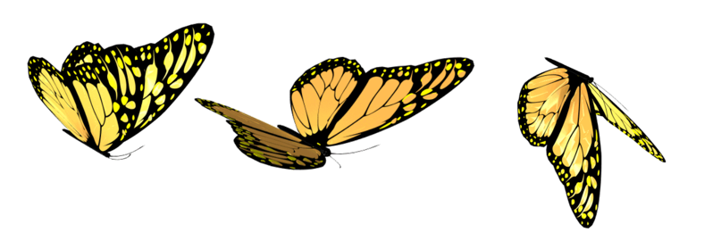

Get in Touch!

Let's connect! Feel free to reach out for research inquiries, international collaborations, or questions about my work.


Let's connect! Feel free to reach out for research inquiries, international collaborations, or questions about my work.